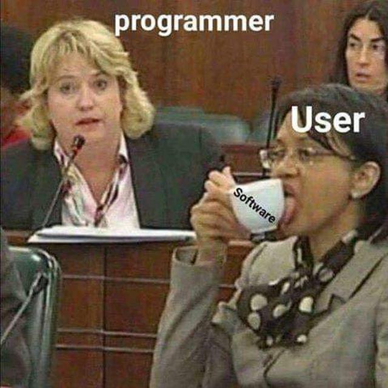
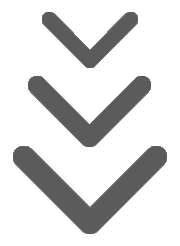

Eugene Zalivadniy
Software Engineer
Hi! I'm a Full-Stack Web Developer from Kherson, Ukraine.
I'm in love with technologies.
I making high-quality modern Web Applications with Django and Angular.
Scroll Down and read more about me below.
I'm in love with technologies.
I making high-quality modern Web Applications with Django and Angular.
Scroll Down and read more about me below.


Stack (Skills and Technologies, that I know and use)
Front-end:
- PSD-to-HTML
- HTML5
- CSS3
- JavaScript
- NPM
- ES
- Gulp
- Webpack
- Babel
- jQuery
- Angular 2+ Framework
UI Frameworks:
- Twitter Bootstrap
- Material Design
- Zurb Foundation (usefull for PSD-to-Email)
Back-end:
- Python
- Flask
- Django
- Django Rest Framework
DB:
- SQLite
- PostrgreSQL
- MySQL
Tools:
- Git
- Linux Mint (Debian Unix OS)
- JetBrains PyCharm IDE
В чём я хорош и почему вам нужен именно я?
- Имею широкий кругозор в области IT, профильное высшее образование компьютерного инженера и программиста.
- Постоянно занимаюсь самообразованием, совершенствую качество и скорость работы.
- Умею гуглить и знаю, что для библиотек и фреймворков пишется документация, а множество ответов на вопросы уже есть на StackOverflow. Любая задача решаема, вопрос в приложенных усилиях и количестве опыта в данной нише.
- Изучаю архитектуру, а не фреймворки.
- Пишу чистый, аккуратный, структурированный, комментированный и масштабируемый код.
- Читаю техническую документацию и могу вести переписку на английском.
- На связи каждый день.
- Никуда не пропадаю (согласовываю заранее, если должен отсутствовать).
- Соблюдаю сроки. Регулярно отписываюсь о проделанной работе.
- Принимаю оплату на карту украинского физлица.
Portfolio
ShitBoard
Description: Flask (Python) Microblog Web Service created with help of Migurel Grinberg "Flask Mega Tutorial"
Production: shitboard.herokuapp.com
Contacts
-
 Telegram:
@eugene_zalivadnyi
Telegram:
@eugene_zalivadnyi
-
 Mobile (Viber/WhatsApp):
+38(095)537-19-31
Mobile (Viber/WhatsApp):
+38(095)537-19-31
-
 Skype:
eugene.zalivadnyi
Skype:
eugene.zalivadnyi
-
 E-Mail:
eugene.zalivadnyi@gmail.com
E-Mail:
eugene.zalivadnyi@gmail.com
Links
-
 Linkedin.com
- For HRs.
Linkedin.com
- For HRs.
-
 GitHub.com
- Code & Project Samples.
GitHub.com
- Code & Project Samples.
-
 StackOverflow.com
- Programming Questions and Answers.
StackOverflow.com
- Programming Questions and Answers.
-
 Facebook.com
- Add me to friends if you are interested.
Facebook.com
- Add me to friends if you are interested.
-
 Instagram.com
- Follow me and write to Direct, if you are interested.
Instagram.com
- Follow me and write to Direct, if you are interested.
-
Dou.ua - Ukrainian Developers Community.
-
 Reddit.com
Reddit.com
-
Soundcloud.com - Some Tracks from Music That I Listening